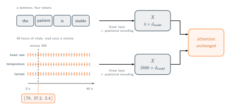

01 · Attention Over Time
From Tokens to Timestamps
What a sequence model assumes about its input.
The attention mechanism was originally designed for natural language processing, where a sentence is treated as a list of tokens. The system evaluates each token in relation to all others, allowing every word to retain a contextual blend of the most relevant surrounding terms. We can visualize applying this identical process to an entirely different scenario. For example, consider a patient's first 48 hours in an intensive care unit where vital signs such as heart rate, temperature, and lactate levels are recorded periodically over two days. This medical data remains a sequence with a clear chronological order. Because we can interpret this temporal data similarly to language, it opens the possibility of adapting the attention structure for entirely new applications.
To implement this approach, we can record the first 48 hours of a patient's stay in an intensive care unit. By reading all three medical signals once per minute, we format each minute as a discrete row. For instance, at minute 300, the resulting row is $[78, 37.2, 2.4]$, representing a pulse in beats per minute, a temperature in degrees, and lactate levels in millimoles per litre. Stacking these recorded minutes produces a matrix containing 2880 rows ($60 \times 48 = 2880$) and 3 columns. We can then widen each row to a dimension of $d_{\text{model}}$ using a linear layer and introduce a positional encoding.
This ensures the input matrix $X$ perfectly matches the dimensions required by the attention mechanism. From this point, the formula executes seamlessly. The attention scores are generated, each row of the softmax distribution sums to one, and the values blend naturally. The underlying mechanism processes the data effortlessly without recognizing that the input originates from a bedside medical monitor instead of a standard paragraph of text. The figure below puts the two side by side: two inputs with nothing in common, one unchanged block at the end of both.

This scenario could serve as a practical example. If we directed this model toward a forecasting objective, such as predicting a patient's heart rate over the subsequent six hours, it could be trained to handle such predictions. Through this process, the model could learn genuine clinical patterns. For instance, it could discover that a fever increasing at the twelfth hour typically continues to rise during the thirteenth hour, and it could recognize that a pulse and temperature often elevate simultaneously. Ultimately, transformer forecasting models in current research could rely on a matrix constructed in this exact manner and could achieve highly effective results.
However it is easy to overlook the numerous assumptions required regarding that 48-hour period before the data matrix could even be formulated. The attention mechanism itself requires none of these prerequisites. The system simply accepts and compares rows of data. It would process any rows provided to it without encountering issues. However, the specific dimensions of the input matrix $X$ do not represent an inherent discovery about the patient. We actively engineered this structure. Establishing this framework required us to resolve three fundamental questions which the hospital ward data did not naturally provide.
What we answered on the patient's behalf
Read the recipe back and count the decisions in it. Each one is a question about those 48 hours, and in each case the answer came from us rather than from the chart.
- What is one row? We said one minute. Nothing about the patient marks a minute as the natural unit, and had we said one second or one hour, the same 48 hours would have produced a different matrix. The row is a unit we imposed on the stay, not one we found in it.
- How far apart are two rows? We said always the same distance, exactly one minute, from the first row to the last. This is the assumption that lets a positional encoding stand in for a clock. Position 300 means minute 300 only while every step is the same length.
- Is every row complete? We wrote three numbers into every row, which claims that all three signals existed at that instant and that all three were recorded. A row with a hole in it is not something the mechanism can score.
None of the three is an unreasonable thing to assume. A bedside monitor really does sample at a fixed rate, and for a signal that comes off a machine the matrix we built is close to honest. So we keep all three for now, and carry on as the grid were real. The rest of this tutorial is those three answers being taken away, one at a time.